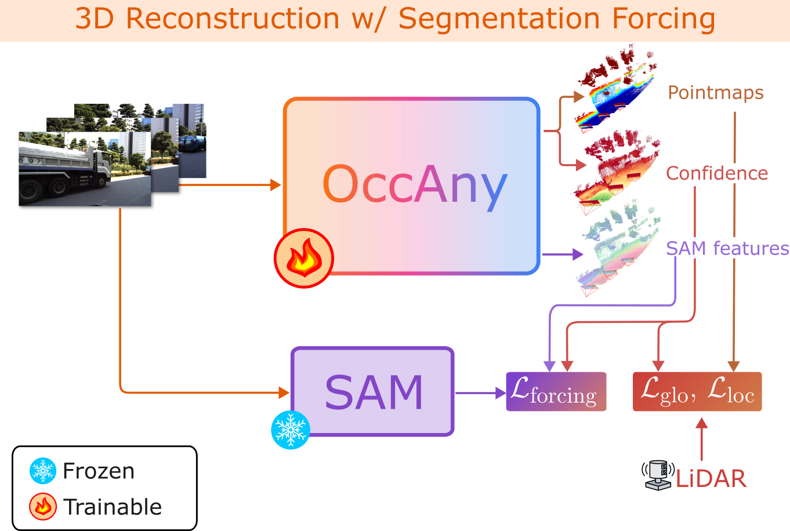
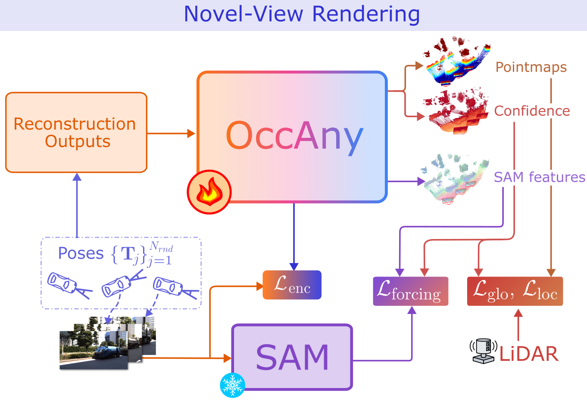

🌟 One OccAny model for any sensor rig, any domain, without input poses or intrinsics.
Key Contributions

- Improve geometry reasoning w/ segmentation foundation model
- High-fidelity segmentation cues
- Resolve geometric ambiguity
- Promptable semantic/instance segmentation features

- High-fidelity Novel View Rendering
- Resolves occlusions
- Implicit dynamic modeling
- Test-time augmentation
Qualitative Comparison
Geometry Occupancy visualizations with Ground-Truth (GT) overlay.
💡
Note: False-positive voxels are displayed as semi-transparent gray, while
colors indicate the semantic labels of true-positive voxels from the ground truth overlay.
Citation
@InProceedings{cao2026occany,
title={OccAny: Generalized Unconstrained Urban 3D Occupancy},
author={Anh-Quan Cao and Tuan-Hung Vu},
year={2026},
booktitle={CVPR}
}